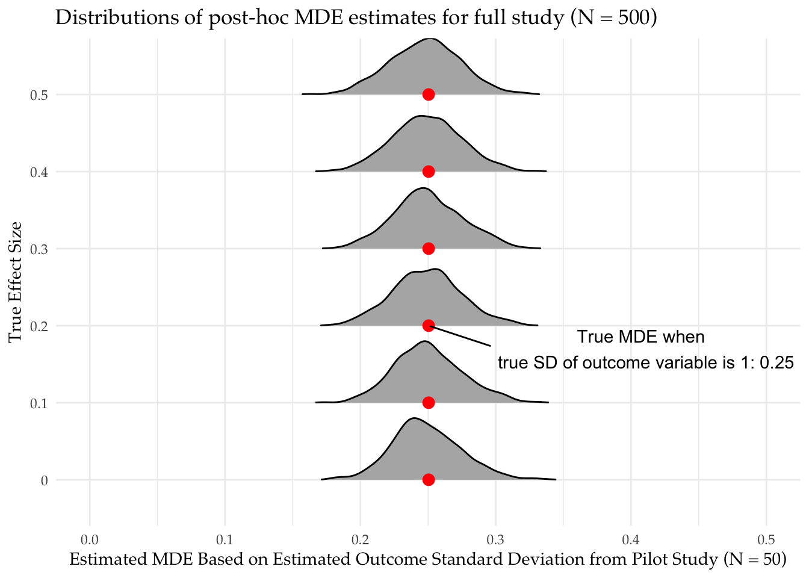

Data collection is expensive, and we often only get one bite at the apple. In response, we often conduct an inexpensive (and small) pilot test to help better design the study. Pilot studies have many virtues, including practicing the logistics of data collection and improving measurement tools. But using pilots to get noisy estimates in order to determine sample sizes for scale up comes with risks.
Pilot studies are often used to get a guess of the average effect size, which is then plugged into power calculators when designing the full study.
The procedure is:
- Conduct a small pilot study (say, N = 50)
- Obtain an estimate of the effect size (this is noisy, but better than nothing!)
- Conduct a power analysis for a larger study (say, N = 500) on the basis of the estimated effect size in the pilot
We show in this post that this procedure turns out to be dangerous: at common true effect sizes found in the social sciences, you are at risk of selecting an underpowered design based on the noisy effect estimate in your pilot study. For a related argument about the dangers of post-hoc power analysis, which inspired this post, see Andy Gelman’s blog.
A different procedure has better properties:
- Conduct a small pilot study (say, N = 50)
- Obtain an estimate of the standard deviation of the outcome variable (again, this is a noisy estimate but better than nothing!)
- Estimate the minimum detectable effect (MDE) for a larger study (say, N = 500), using the estimated standard deviation
We show what happens in each procedure, using DeclareDesign. In each case, we’ll think about a decision the researcher wants to make based on the pilot: should I move forward with my planned study, or should I go back to the drawing board? We’ll rely on power to make that decision in the first procedure and the MDE in the second procedure.
To get started, we set up a designer1 for a standard two-arm trial where half of units are assigned to treatment and we use a difference-in-means estimator. We will use the same designer to simulate the pilot (N = 50) and the main study (N = 500). The designer lets us change the sample size, the true effect size, as well as the true standard deviation of the outcome (sd_y).
We will make use of a function that records estimates of the standard deviation of outcomes in each condition.
sd_estimator <- function(data){
data.frame(sd_y_0_hat = sd(data$Y[data$Z == 0]), sd_y_1_hat = sd(data$Y[data$Z == 1]))
}
designer <-
function(sample_size = 50, true_effect_size = 0, sd_y = 1) {
design <-
declare_model(
N = sample_size,
u = rnorm(N, sd = sd_y),
potential_outcomes(Y ~ true_effect_size * Z + u)) +
declare_assignment(Z = complete_ra(N)) +
declare_measurement(Y = reveal_outcomes(Y ~ Z)) +
declare_estimator(Y ~ Z, model = difference_in_means, label = "dim") +
declare_estimator(handler = label_estimator(sd_estimator), label = "sd_estimator")
}Should you use your pilot to estimate the effect size for your power analysis?
We first simulate the effect size estimates we would get from our small pilot study (N = 50). We look at how our piloting design works at true effect sizes from 0 to 0.5.
# simulate estimated effect sizes from the pilot study
pilot_designs <-
expand_design(designer, true_effect_size = seq(from = 0, to = 0.5, by = 0.1))
simulations_pilot <- simulate_design(pilot_designs, sims = sims)For each true effect size, the simulations will give us a distribution of estimated effects that a researcher might use as a basis for power analysis. For example, for a true effect size of 0 the researcher might still estimate an effect of 0.10, and so conduct their power analysis assuming that the true effect is 0.10. For each true effect, we can thus construct a distribution of power estimates a researcher might obtain from estimated effects. Since we know the true power for the true underlying effect, we can compare the distribution of post-hoc power estimates to the true power one would estimate if one knew the true effect size.
# estimate power for the full study for possible estimated effect sizes from the pilot study
# (exploit fact that power is symmetric so we don't need to calculate power for negative effect sizes)
max_pilot_estimate <- max(simulations_pilot$estimate, na.rm = TRUE)
study_designs <-
expand_design(designer,
sample_size = 500,
true_effect_size = seq(0, max_pilot_estimate, 0.01))
diagnosis_study <- diagnose_design(study_designs, sims = sims)What did we find? In the plot, we show our guesses for the power of the main study based on our pilot effect size estimates.
At high true effect sizes (top row), we do pretty well. Most of our guesses are above 80% power, leading us to the correct decision that the study is powered. Indeed we often underestimate our power in these cases meaning that we run larger studies than we need to.
However, at low true effect sizes (bottom row) we show we are equally likely to find that the design is in fact powered as underpowered. We are equally likely to guess the power of the design is 90% as 10%. There is a good chance that we will falsely infer that our design is well powered just because we happened to get a high estimate from a noisy pilot.

How about estimating the standard deviation of the outcome?
Now, let’s look at the second approach. Here, instead of using our pilot study to estimate the effect size for a power calculation, we estimate the standard deviation of the outcome and use this to calculate the main study’s minimum detectable effect. The decision we want to make is: is this MDE small enough to be able to rule out substantively important effects?
We calculate the minimum detectable effect size using the approximation from (Gelman and Hill 2006, pg. 441), 2.8 times the estimated standard error. We estimate the standard error using Equation 3.6 from Gerber and Green (2012).
We plot the distribution of MDE guesses. At each true effect size, our MDE estimates based on the estimated SD of the outcome variable in the treatment and control groups are unbiased for the true MDE (red dots). In other words, our piloting design will give us a good guess for the MDE of our full study.

In summary, pilot studies can be valuable in planning research for many reasons, but power calculations based on noisy effect size estimates can be misleading. A better approach is to use the pilot to learn about the distribution of outcome variables. The variability of the outcome variable can then be plugged into MDE formulas or even power calculations with, say, the smallest effect size of political, economic, or social importance.
In the same spirit, pilot studies could also be used to learn the strength of the correlation between pre-treatment covariates and the outcome variable. With this knowledge in hand, researchers can develop their expectations about how much precision there is to be gained from covariate control or blocking.
References
Footnotes
A designer is a function that writes designs.↩︎